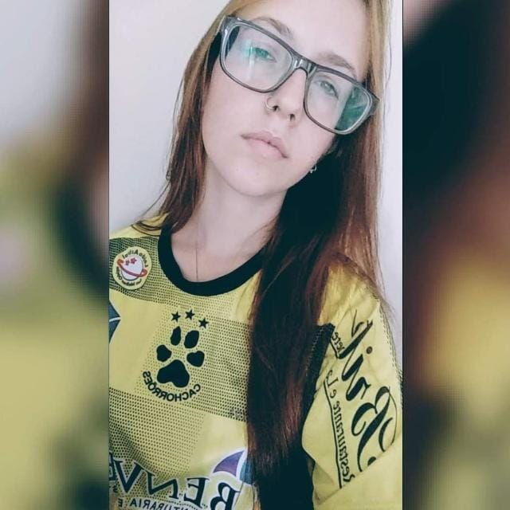

Site de Carolini Conzatti

Prazer! Meu nome é Carolini Conzatti e gosto de aprender e explorar novos horizontes. Por este motivo resolvi me aventurar na programação. No meu tempo livre, gosto de estudar, assistir e jogar, onde posso tanto relaxar quanto estimular minha mente com estratégias e desafios. Estou sempre em busca de oportunidades para crescer profissionalmente e acredito firmemente no poder do trabalho em equipe e na colaboração para alcançar objetivos comuns.
Meus Hobbies

No meu tempo livre gosto de assistir animes, um exemplo deles é Jujutsu Kaisen. Tudo começa quando Yuji Itadori que é apenas um estudante comum do ensino médio junto com seus colegas de clube descobrem um amuleto amaldiçoado, que desencadeia uma série de eventos sobrenaturais. Em um ato de coragem e desespero para salvar seus amigos das maldições liberadas, Itadori consome o objeto amaldiçoado e assim acaba se tornando receptáculo de Ryomen Sukuna, mais conhecido como o REI DAS MALDIÇÕES.

League of Legends é um MOBA, criado pela Riot Games. No jogo, duas equipes de cinco jogadores competem contra si em um mapa dividido em duas cores (vermelho e azul), com o objetivo de destruir o “Nexus” inimigo. Cada jogador controla um “campeão” com habilidades únicas e diferentes estilos de jogo. Os campeões se fortalecem ao longo da partida, ganhando experiência, ouro e comprando itens para derrotar a equipe adversária.